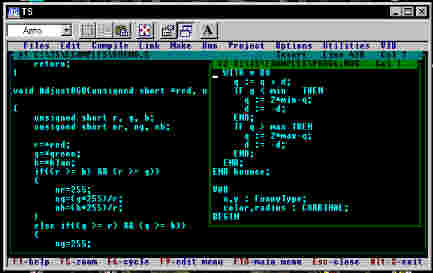
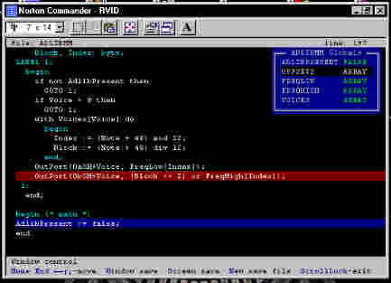

Введение ВведениеПрограммирование сейчас и программирование 10 лет назад - две большие разницы. Попечалимся немного, что высокое искусство Рафаэля и Айвазовского уступило место равномерному протягиванию малярных валиков поверх заранее заготовленных шаблонов... Ну что ж, такова селяви, а против Прогресса не попрешь! Кроме того, мир "классических" программистов (в отличие от "прикладников" - приверженцев Paradox, Clarion, FoxPro, Clipper, IsaGraf, LabView и пр.) хотя и неимоверно сузился за прошедшее десятилетие, но не исчез совсем, выжил и продолжает существовать. И этот мир расколот вдоль и поперек. Орды сишников и паскалистов-дельфинистов с неприязнью взирают друг на друга, и с недоумением - на касту бэйсикианцев, "странную из каст". Еще имеются чванливые аристократы, которые западают по остромодным и ультрасовременным Java и Perl, а также сектанты-мазохисты, регулярно окунающиеся в прорубь ассемблерного кода. Кроме того, этот мир поделен по вассальному признаку. Подданные королевства Microsoft не усаживаются рядом за одним столом с гражданами республики Borland/Inprise. И скромненько-скромненько на уголке стола, рискуя 7 лет замуж не выйти, пристраиваются жители герцогства WatCom и графства Symantec... Далее речь пойдет о великом продукте, который, - увы!- не дожил до наших дней. Произойди это, может быть ситуация выглядела бы совсем по-другому. Речь пойдет о семействе TopSpeed-компиляторов фирмы Jensen & Partners International. 1. Общая характеристикаФормально, TopSpeed - это семейство из пяти оптимизирующих компиляторов с разных языков программирования, объединенных общим кодогенератором, общими библиотеками, общим линкером и общей интегрированной пользовательской средой. Фактически это - единый универсальный пятиязыковый компилятор! TopSpeed поддерживает программирование на пяти языках:
Можно написать программу, отдельные фрагменты которой написаны каждый на своем языке! TopSpeed выполняет генерацию кода для трех операционных сред:
TopSpeed поддерживает программирование в восьми моделях памяти:
Размер Размер Примечание
кода данных
Small 64Кб 64Кб
Compact 64Кб 1Мб
Medium 1Мб 64Кб
Large 1Мб 1Мб Threshold 32Кб
XLarge 1Мб 1Мб Threshold 64Кб
Multi-Thread 1Мб 1Мб Многопроцессность
Overlay 1Мб 1Мб Общий размер до 16Мб
DDL 1Мб 1Мб Не только Windows, но и ДОС
TopSpeed содержит многооконную пользовательскую среду программирования, контекстно-зависимый HELP по возможностям ситемы и библиотечным функциям, мощный и удобный многоязыковый отладчик VID, расширитель памяти по типу PharLap или WatCom DOS4GW и множество сервисных утилит.

2. МногоязычиеКак выглядит одна и та же программа на разных языках, можно посмотреть на примере входящей в дистрибутив демонстрационной программы Windemo. Эта программа также иллюстрирует возможности TopSpeed по многооконному вводу-выводу и организации многопроцессности.
Язык Размер Размер
исходника кода
Modula-2 16237 25500
Pascal 9694 31305
C 15868 24137
C++ 12640 38665
3. БиблиотекиСреди библиотек, входящих в комплект TopSpeed, можно отметить: 1. Cтандартные библиотеки, традиционно соответствующие тому или иному языку:
Характерно, что благодаря перекрестной совместимости, большинство из них доступно к использованию во всех языках. Например, можно использовать в программе на Modula-2 вариант сишной функции printf(). 2.Дополнительные, присущие другим системам программирования. В частности, TopSpeed включает варианты библиотек BGI-графики от Borland. Кроме того, содержатся разные интерфейсы для одной и той же функции. Например, к сишной функции окрытия файла можно обратиться как в стиле Borland: _open(), так и в стиле Microsoft: _dos_open(). Наконец, поставляется документ, описывающий правила подключения к TopSpeed большого количества широко известных сервисных библиотек от независимых производителей, типа Halo, Green Leaf и т.п. 3.Дополнительные библиотеки, характерные для TopSpeed. Это очень удобные, мощные средства программирования, предназначенные для профессионалов:
4. ОтладкаTopSpeed содержит мощный интегрированный многоязыковый отладчик VID (Visual Interactive Debugger). Как и любой отладчик подобного класса и назначения (например, TurboDebugger), он обеспечивает:

Имеется возможность писать программы, взаимодействующие с отладчиком в процессе своей работы. Кроме того, в TopSpeed содержится такое мощное средство отладки, как "посмертный дамп". 5. Управление трансляцией и компоновкой кодаTopSpeed обладает уникальными возможностями по управлению трансляцией и компоновкой кода. Болшинство из них доступны в режиме меню интерактивной среды или в режиме управляющих ключей компилятора командной строки. Но максимальная гибкость и мощность обеспечивается в результате использования прагм - ключевых последовательностей, вставляемых в текст програмы и обрабатываемых компилятором. Прагмы позволяют управлять:
В частности, умелое применение прагм позволяет, например, компоновать TopSpeed-программы с кодом, оттрансслированным в других системах программирования. Пример прагмы, включающей режим совместимости с Turbo C:
Подробное описание прагм можно найти здесь. 6. TopSpeed и WindowsTopSpeed содержит собственный вариант Windows 3.x API, собственный компилятор ресурсов TSRC, и позволяет создавать программы для Windows в формате NE (но, к сожалению, не PE). В частности, средствами TopSpeed без проблем компилируются практически все учебные и демонстрационные программы (за исключением содержащих текст на встроенном языке Ассемблера), поставляемые вместе с Microsoft C/C++ 6.x/7.x и Borland/Turbo C/C++ 2.x/3.x. Сведения по входящей в дистрибутив программе WDemo:
Язык Размер Размер
исходника кода
Modula-2 5410 5914
Pascal 5685 7266
C 5166 5560
C++ 5196 5650
Кроме того, TopSpeed позволяет создавать программы для OS/2. 7. Дополнительные утилитыС TopSpeed поставляется ряд сервисных утилит, еще более увеличивающих мощность и гибкость этой системы программирования. Общее количество их более двух десятков, отметим наиболее интересные:
8. Характеристики отдельных языковСледует еще раз отметить, что TopSpeed представляет собой единую систему программирования, и все поддерживаемые языки перекрестно совместимы. Это означачает, в частности, что возможен доступ из любого языка к библиотекам, созданным для другого языка. При передаче параметров между процедурами в TopSpeed по умолчанию используется быстрый и компактный способ - через регистры. Для совместимости со стандартными OBJ-файлами возможно включение при помощи соответствующих прагм традиционных режимов в стиле C или Pascal. Все стандартные библиотеки ко всем языкам поставляются как в виде OBJ и LIB-файлов, так и в виде исходного кода. Более подробную и более строго организованную информацию по различным языкам можно найти здесь. 8.1. Modula-2Это язык, с которого начиналось семейство TopSpeed-компиляторов, и который занимает центральное место в описываемой системе программирования. Достойных конкурентов TopSpeed M2 на мировом рынке программных продуктов так и не появилось (даже если учитывать мощный, но тяжеловесный и неудобный продукт Logitech M2). Язык Modula-2 в интерперетации TopSpeed практически не отличается от оригинальной спецификации, разработанной создателем языка Н. Виртом. В числе отличий можно отметить:
Практически все дополнительные сервисные библиотеки TopSpeed разработаны внешними производителями именно для Modula 2. Среди них:
Широко известный перевод фирменной документации по TopSpeed Modula-2, относящейся к версии 1.15, пригоден и для всех последующих версий. 8.2. PascalЭто вариант языка, удовлетворяющий стандарту ISO 7185 и примерно соответствующий тому, который был реализован в Turbo Pascal 5.5. Встроенные функции и внешние библиотеки также соответствуют версии 5.5, включая BGI-графику. Но дальнейшее развитие Borland/Turbo Pascal в сторону ООП, достигнутое в версиях 6 и 7, в TS Pascal не отражено. Соответственно, в TS Pascal недоступно, например, использование Turbo Vision. В TopSpeed включена собственная модель ООП, не совместимая со стандартом от Borland. Также не подерживается TPU-формат объектных библиотек. Можно отметить следующие любопытные особенности языка:
В комплекте TopSpeed имеется сервисная утилита TP2TS, выполняющая конвертирование текста на Turbo Pascal в текст на TS Pascal и автоматически устраняющая все мелкие языковые несоответствия. 8.3. CB TS С поддерживаются несколько стандартов языка, - от K&R, через ANSI, до некоего расширенного варианта, примерно соответствующего Turbo C 2.0 (но не Borland C/C++ 2.0) и Microsof C 6.0. В целях обеспечения совместимости библиотеки имеют для многих функций различные форматы вызова - в стиле Borland и в стиле Microsoft. В качестве приятной мелочи можно отметить возможность организации комментариев в силе C++. 8.4. C++TS C++ соответствует стандарту ATT 2.1 и, соответственно, поддерживает традиционную концепцию ООП, включающую инкапсуляцию, полиморфизм и наследование, а также содержит все стандартные механизмы ООП: классы, конструкторы и деструкторы, перегрузку и пр. Вместе с TC C++ может поставляться мощнейшая библиотека классов Rogue- Wave, включающая:
8.5. Язык АссемблераTopSpeed не поддерживает смесь текстов языка высокого уровня и текста на встроенном языке Ассемблера в том виде, как это используется в системах программирования от Microsoft и Borland. Но в TopSpeed предусматривается вынесение ассемблерных процедур в отдельные модули, к которым необходимо лишь дописать стандартные интерфейсы в виде DEF, ITF, H или HPP-файлов. Файлы с модулями на языке Ассемблера должны иметь расширение .A, а не .ASM, как это принято в MASM и TASM. Синтаксис языка несколько отличается от принятого в TASM или MASM, но не сильно.
; Фрагмент на MASM (* Фрагмент на TS ASM *)
mov cx, word ptr [bx+si] mov cx, word [bx][si]
rep movsb rep; movsb
retf ret far 0
Кроме того, внутри текста на любом языке поддерживаются inline-блоки 16-ричного кода. 9. Маленькая ложка дегтяЧерез мои руки прошли несколько версий TopSpeed-компиляторов от JPI. К сожалению, среди них не попалось ни одной полностью отлаженной и избавленной от ошибок, таких как:
К счастью, все эти глюки и баги возникают достаточно редко и не сильно мешают работе. Приспособившись, можно вообще не обращать на них внимания. Следует также отметить, что, по моим наблюдениям, самым быстрым, безошибочным, генерирующим самый оптимальный и быстродействующий код, является ранняя версия 1.15 компилятора TS Modula-2. 10. Судьба TopSpeed-компиляторовВ 1987 г. фирма Jensen & Partners International (JPI) вышла на рынок со своим продуктом TopSpeed Modula-2 v1.х. В работе над ними принимали участие выходцы из фирмы Borland, реализовавшие в новом компиляторе свой опыт, полученный в результате создания Turbo Pascal 1.x-3.x. Поэтому эту систему программирования поначалу даже ошибочно именовали Turbo Modula-2. Система содержала очень быстрый, сильно оптимизирующий компилятор и оригинальный механизм компоновки модулей. Очень бысто TopSpeed Modula-2 стала весьма популярной. Версия языка была поддержана Н. Виртом и стала промышленным стандартом. В 1989-90 гг. появилась версия 2.0, причем поддерживались уже два языка - Modula-2 и C. Она была по всем параметрам промежуточной и не получила широкого распространения. Наконец, в 1991 г. стартовала версия 3.х. Упор делался на многоязычие и многоплатформенность, а также на совместимость с другими системами программирования. К сожалению, уже к тому моменту в TopSpeed наметилось отставание от требований текущего дня. В частности, в 1992 году, когда продолжали выходить очередные релизы версии 3.х, ведущее значение приобрела уже версия Windows 3.1x, которая в TopSpeed Windows API не поддерживалась. Фирма JPI со своим чудесным продуктом имела шансы удержаться на гребне волны и стать конкурентом Microsoft и Borland только в результате мощных финансовых инвестиций, обеспечивших бы технологический рывок. Поэтому она с радостью приняла предложение влиться в Clarion Corp. Брюса Баррингтона, искавшую свежие идеи и рабочие руки для продвижения своей оригинальной СУБД Clarion. И все. На этом история многоплатформенной многоязыковой системы закончилась. Более коммерчески выгодный "прикладной" продукт, - Clarion, - естественным образом затормозил, оттеснил, а потом и похоронил своего "классического" собрата. Несколько очередных релизов 1992 года вышли уже под торговой маркой Clarion. В 1993-94 гг. язык Modula-2 был включен в качестве "ассемблера нижнего уровня" в Clarion for DOS v3.x и даже в ряд последующих версиий for Windows (в варианты дистрибутивов с квалификатором "professional"). А потом и этого не стало. Requiescat in pace. ЗаключениеДанный текст создан на основе собственного многолетнего опыта работы с TopSpeed-компиляторами. Также использованы материалы из следующих изданий и публикаций: 1. Белецкий Я. ТОПСПИД: Расширенная версия язака Модула-2 для персональных компьютеров IBM.- М.: Машиностроение, 1993. - 602 с. 2. Богатырев Р. Modula-2. Краткий курс // Технология программирования, 1993. - C. 7-34. 3. Тихонов А. TopSpeed Pascal // Монитор, -№7-8, 1993, - С.42-52. Выражаю благодарность Vladimir V. Smelik за его усилия по предоставлению мне возможности ознакомиться с полным пакетом TopSpeed v3.1.
Владелец торговой марки TopSpeed фирма Clarion Corp.:
http://www.clarion.com
(с) Constantin E. Climentieff aka DrMad, 2000 |